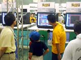
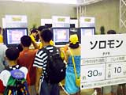
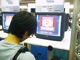
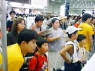
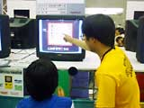
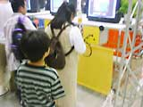
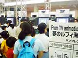

page1 ・・・ page2
|
| ●ブレイブサーガ 新章アスタリア 11月下旬発売予定 タカラ |
| 相棒のロボット"ガンバー"と共に、魔人たちを倒しながらダンジョンを攻略し、仲間をふやしていくRPG。ストーリーはゲームボーイカラー版オリジナルなんだそうです。子供達が大半を占める体験コーナーの中にあって、このコーナーだけ、並んでいるのはほとんど大人という、珍しい光景も見られました。マニア受けするタイトルですものね。 |
| ●ソロモン 9月29日発売予定 テクモ |
| 往年の名作「ソロモンの鍵」と、ゲームやアニメで大人気の「モンスターファーム」が合体したアクションゲームです。モンスターファームファンの小さなお子さんと、「ソロモンの鍵」を覚えているお父さんが、仲良くプレーしていました。親子で楽しめるゲームということで、こういう組み合わせは面白いですね。 |
●テイルズ オブ ファンタジア なりきりダンジョン
11月10日発売予定 ナムコ |
| 着ている服の職業になることができる、"なりきりし"のメルとディオ。コスチュームを着こなして様々な特殊能力を身につけ、毎回変化するダンジョンにチャレンジしてください。藤島康介（キャラクターデザイン担当）氏のファンでしょうか、大人の人もけっこう並んでいるようです。 |
| ●ポケットキング 発売日未定 ナムコ |
| 懐かしの名作、「キングオブキングス」が、オリジナルストーリーでゲームボーイに復活です。といっても、並んでいるのは小学生くらいの子供達がほとんど。みんなにとっては、初めてみるゲームなわけです。後ろで見ているお兄さん（お父さん？）はしきりに首を傾げていましたが、遊んでみると思い出すんじゃないですか？ |
| ●攻めCOMダンジョン ドルルルアーガ 発売日未定 ナムコ |
| クリーチャーを召還してダンジョンに配置し、ジュエルを奪い合うというアクションパズルゲーム。ストーリーやキャラクターは名作「ドルアーガの塔」を継承しているので、ちょっと年をとったかつてのドルアーガファンがプレーしている姿も、よく見受けられました。 |
| ●グランディア パラレル トリッパーズ（仮称） 12月15日発売予定 ハドソン |
| 大作RPG「グランディア」が、いよいよゲームボーイカラーにやってきます。シナリオは完全書下ろしの新ストーリー。おなじみのキャラクターに加え、ピンキーという新マスコットも登場するそうですよ。「（グランディアは初めてプレーするけど）もうちょっと遊びたかった」という男の子もいました。 |
●From TV animation ONE PIECE 夢のルフィ海賊団誕生！
2000年冬発売予定 バンプレスト |
| 子供から大人まで、幅広い年齢層で人気を集めている"ワンピース"が、今度はゲームになりました。ルフィやゾロと一緒に、広大な海でワクワクする冒険を楽しんでください。「まだぜんぜん開発途中なんですけど…」というスタッフの心配をよそに、終日1時間を超える待ち時間になるほど、たくさんの人が並んでくれたようです。スゴイ人気ですね。 |
ゲームボーイカラー体験コーナー（ライセンシー）その３
page1 ・・・ page2
|